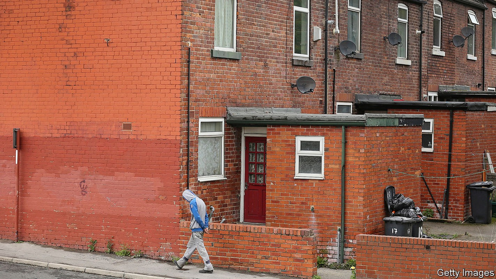
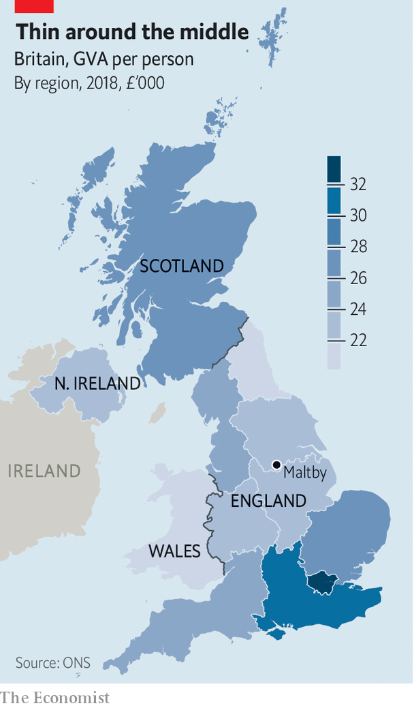
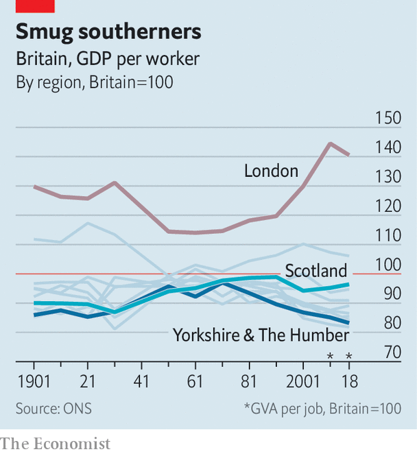

Why Britain is more geographically unequal than any other rich country
Other countries have poor bits. Britain has a poor half

“SOMEONE’S BEEN busy”, says John Trueman, a builder. Apart from an old sign at the entrance, there is little hint that the enormous patch of ground in South Yorkshire was a working mine until 2013. The baths where the men washed before Maltby Colliery closed are a pile of rubble. An old car park is being used to store construction vehicles for auction. A site that once employed more than 1,000 people is quiet, except for one security guard, who is breezily informed by Mr Trueman that trespassing is not a crime.
Listen to this story.Enjoy more audio and podcasts on iOS or Android.
Listen to this story
Save time by listening to our audio articles as you multitask
Maltby grew quickly in the early 20th century after coal started coming out of the mine. “It seemed as though a town of bricks had been carried bodily through the air and dropped”, remembered Fred Kitchen, a farm labourer who published a memoir in 1940. It has declined almost as quickly. The village seems past its best, bereft of wealth, and lagging. The miners welfare club is boarded up; the high street is full of bargain shops. One street still has flags up from Remembrance Day, eight months ago.
The village is also at the centre of a political revolution. Maltby lies in the constituency of Rother Valley, which was created in 1918 and held by the Labour Party without interruption for a century. Last December, however, Rother Valley went Conservative. That was surprising; what is more, the new MP, Alexander Stafford, was educated at Oxford and was previously a local councillor in west London. Three constituencies touching Rother Valley swung from Labour to the Tories at the same time.
That upheaval, which was caused largely by the defection of white working-class voters to the Conservative Party, creates a political problem. Conservatives (like Labourites) have talked for years about the need to revive the poorest parts of Britain. Now, as Mr Stafford puts it, the party has skin in the game. If the Tories cannot work out how to improve the lives of their new supporters in left-behind places, they might not survive the next election.
Many wealthy countries contain poor regions. America has the rural South and the Mexican border area; Germany has the former East Germany; Italy has the lower part of the boot. But Britain is unique. On a regional level, it is exceptionally unbalanced, and becoming more so. Look closer, to the towns and cities within those regions, and Britain seems even odder.
In 2017 The Economist pointed out that the gap between GDP per person in the richest and poorest parts of Britain is larger than in other rich countries. That remains true; indeed, it has grown. The richest bit (Camden and the City of London) is now 30 times richer than the poorest (Ards and North Down in Northern Ireland). Not everybody likes that comparison; some argue that GDP per person is distorted by commuters, and that the data are skewed by the way regional boundaries are drawn.
No measure is perfect. So Philip McCann, an economist at the University of Sheffield, has compared Britain with other rich countries on 28 of them. He looks at large regions and smaller ones, and uses various yardsticks—GDP, gross value-added and regional disposable income. Britain can be compared with between 10 and 26 other countries. On all 28 of Mr McCann’s measures, Britain is above average for geographical inequality. On six, it comes top. “We’re a world beater”, he says.
It is not as though nobody has tried to do anything about it. “Regional policy is not a new thing—it goes back to 1937,” says David Higham, who used to oversee the government’s efforts in north-west England. Between the 1940s and the 1960s businesses and people were pushed out of London and other big cities; the population of the capital eventually fell by 2m. Since the 1970s governments have launched local and regional regeneration schemes at the rate of about one per year.
The net effect of all those city grants, local strategic partnerships, local enterprise growth initiatives, city region pilots, local enterprise partnerships, regional growth funds and the rest has been: not much. Since the 1960s London and the regions next to it have powered ahead relentlessly. In 1998 productivity per head in London was 65% above the British average. At the last count, in 2018, it was 77% higher. Half of all foreign direct investment projects go to London and south-east England.
Covid-19 has knocked the capital back. The streets of central London are quieter than elsewhere, according to mobile-phone data analysed by the Centre for Cities, a think-tank. In the year to June 11th the unemployment claimant count in the capital rose by 4.8 percentage points to 7.5%. That is a higher increase than any other region. On the other hand, the brain-workers of London and south-east England have probably not become much less productive. Their swift conversion to remote working, which is a calamity for the baristas of central London, bodes well for southern England’s long-term fortunes.
North of a line from the Severn estuary to the Wash, and south of Hadrian’s wall, lies an area that (measured by purchasing-power parity) is as poor as the American state of Alabama or the former East Germany. The regions therein—the East and West Midlands, North West, Yorkshire and the Humber, North East, Wales and Northern Ireland—contain 47% of Britain’s population. By contrast, 20% of Germans live in the former Democratic Republic, and only 15% if you exclude Berlin.

The former East Germany is emptying as young people drift west. In Britain every region is growing. Yorkshire and the Humber, which includes Maltby, is swelling three-quarters as quickly as the United Kingdom as a whole. Maltby is shedding people, but slowly for a place that has lost its main industry. Since 2002 the parish population is thought to have fallen by 4% to 16,500. Homes are cheap, and many former miners have paid off their mortgages. They can get by on money from odd jobs.
Eight miles west of Maltby, in Rotherham’s city centre, Deborah Bullivant has created something remarkable. Officially, Grimm and Co is an apothecary’s shop that has existed since 1148 but was made visible to mortals in 2016; more straightforwardly, it teaches creative writing and sells strange objects. It has been so successful that it will soon move into an enormous new premises in a former Methodist church. The shop is a quirky place, with hidden doors and a beanstalk for sliding down. But Ms Bullivant’s wonderful illusion dissolves when you look out of the front window. The view from Grimm and Co is of a charity shop, a closed bank, a closed electrical-goods store and a closed clothes shop.
“Thirty or forty years ago, this was a wealthy town,” says Andrew Denniff, head of the local chamber of commerce. Now Rotherham is on its uppers. Local people claim that nearby shopping centres have sucked away customers, and that others have been scared off by a sex-abuse scandal and a series of far-right marches. The truth is bleaker. The metropolis of which Rotherham is part—which also includes Sheffield and contains 1.2m people—is ailing.

In other countries, cities are often islands of prosperity in poor regions. In the former East Germany, for example, Dresden and Leipzig are doing increasingly well. They are wealthier than the state in which they are located, and are climbing towards the national average. Britain is different. In 2017 GDP per person in the Sheffield metropolitan area was just 70% of the British average, according to the OECD—its lowest share since the turn of the century. Only nine of Britain’s 40 metropolitan regions that can be analysed are wealthier than the country. Just one of the nine, Preston, is in northern England.
The real economic divide in Britain is not between urban and rural areas, or between big cities and small towns, says Mr McCann. Wealthy regions tend to contain wealthy cities and towns; poor ones have mostly poor cities and towns. The real gap is between regions—or, to look at it another way, between urban areas in poor regions and urban areas in richer ones. The puzzle is why, with the great exceptions of Edinburgh and London, Britain’s large cities do not lift their hinterlands.
A hub with no spokes
The answer is not simply that southern cities suck talent out of northern ones. By tracking tax records, the Office for National Statistics found that 94% of young people in Rotherham stayed put between 2011 and 2015, or moved only within the Sheffield area. Fewer than 1% went to London. People who move to affluent areas tend to be from affluent areas. The government’s Social Mobility Commission has divided places into “hot spots” with lots of opportunities (mostly in London and the south-east), “cool spots” that lack them, and “medium spots” in between. It finds that migration between hot spots is seven times greater than moves from cool spots to hot spots.
Poor places tend to grow too little talent in the first place. When Mr Trueman was at school, a truce existed between teachers and working-class children: “If you weren’t bothered, they weren’t bothered.” These days Maltby’s academy fares better. And in Rotherham, 21% of disadvantaged 18-year-olds from state schools and colleges go on to higher education—not far below the English average of 25%. Still, London is miles ahead: 41% of disadvantaged 18-year-olds there go on to higher education.
Another reason for many cities’ weak performance is that they are not larger. England has 14 urban green belts, covering 12% of the land area. Along with height restrictions and NIMBYism, these push up property prices in prosperous cities both southern and northern, making it hard for people in places like Maltby to move to them. “If we didn’t constrain their growth so much, Oxford and Leeds would be a hell of a lot bigger,” says Henry Overman of the London School of Economics.
Some metropolises are so hard to get around that they do not benefit much from their concentrations of businesses and people. As northern cities complain, London absorbs a large share of infrastructure money. In 2017-18, 28% of public expenditure on transport—and 46% of capital expenditure on railways—went there. The capital’s advocates argue that it gets a lot of public money because a lot of people take public transport. But two economists, Diane Coyle and Marianne Sensier, have shown that projects with low benefit-cost ratios are more likely to go ahead there.
London is exceptionally good at making the case for public and private investment in itself. It has the highest-profile mayor (a former occupant of that office, Boris Johnson, once argued that “the jam from London must not be spread too thinly over the dry Ryvita of the regions”). It has the biggest businesses and the best transport agency. The capital’s only real English rival is Manchester, which has been cleverly led since the 1990s. What crumbs fall from London’s table, such as the Commonwealth Games, the HS2 railway and much of the BBC’s production, tend to go there.
The other success is Scotland. “If you look back, there was no real difference between Scotland and the rest of the UK until the 1950s and 1960s,” says Graeme Roy of the Fraser of Allander Institute, a think-tank. But Scotland was represented by the powerful Scottish Office, which lobbied for its interests in Westminster. As local governments in England lost powers, Scotland gained them. A generous public-spending formula, and the opening of the North Sea oilfields, helped it become the richest part of Britain outside south-east England.
Sheffield and its neighbours, by contrast, are divided and fractious. In 2015 they were offered a “city deal” by Westminster, giving them more power and money. Two members of the gang, Barnsley and Doncaster, demurred, arguing that Yorkshire should be treated as a single unit. After much tedious argument (at one point the Archbishop of York was asked to mediate) a deal was agreed earlier this year. “If we can’t help ourselves, why should we expect anybody else to help?” asks Mr Denniff.
These are all knotty problems, which cannot be unpicked quickly. They compound each other. Just as people are seldom poor for one reason, regions do not fall behind only because they have poor transport, poor schools or poor leadership, but for all those reasons and more. Ideally, Britain would develop a bold plan for regional development that could be followed by successive governments, as Germany did for its eastern part. Tera Allas of McKinsey, a consultancy, argues that improving education is crucial, even if the returns are not immediately obvious. It is easier to improve schools than to persuade businesses to move to a part of the country.
But that is not much good for a government that feels compelled to do something before the next election, probably in 2024. So Tory thinkers are increasingly arguing for a different approach. Never mind the big cities, they say. Concentrate instead on giving the residents of small cities and towns things that make them proud of where they live. That could mean a better bus service or a spruced-up high street. “It’s about money, but not necessarily about growth,” says Will Tanner of Onward, an influential conservative think-tank.
Mr Stafford, Maltby’s new MP, agrees. The Tory vote is not growing in big cities like London and Manchester, he points out. The party’s future lies in places like Rother Valley. He is a critic of the High Speed 2 railway line, which will connect big cities, but a fan of restoring local railway services. He insists locals want small, incremental improvements that they can see. “They want their little part of England to be a little bit better than it was before,” he says.■